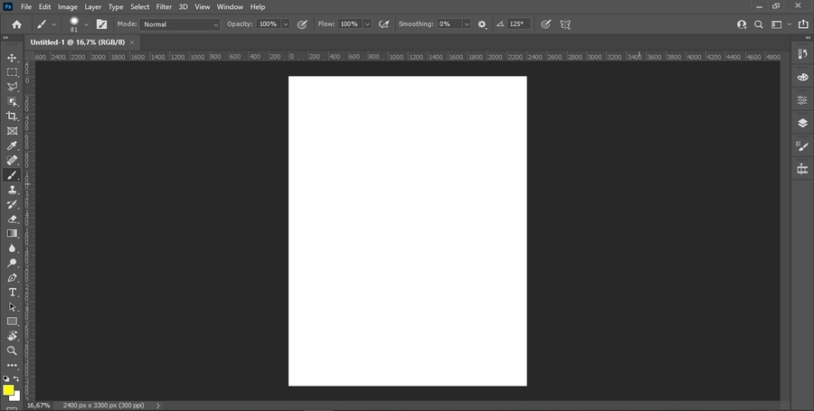

O Adobe Photoshop é a alternativa comercial mais utilizada para edição de bitmaps em todo o mundo e possui recursos exclusivos além de ferramentas para manipulação 3D e animação, é bem parecido com o GIMP, e se você já se acostumou durante o curso com o Illustrator verá que os dois são praticamente idênticos.
A Barra de Ferramentas se encontra à esquerda e as janelas de encaixe à direita. As janelas de encaixe mais importantes para termos acesso são Camadas, Propriedades e Histórico, se você trabalha com pintura desejará também a janela Configurações de Pincel.
Área de Trabalho do Photoshop:
Assim como no Ilustrator e no GIMP, você pode escolher as cores de suas ferramentas diretamente no final da Barra de Ferramentas, no entanto algumas configurações podem ainda ser acessadas na Barra de Propriedades acima do Espaço de Trabalho.